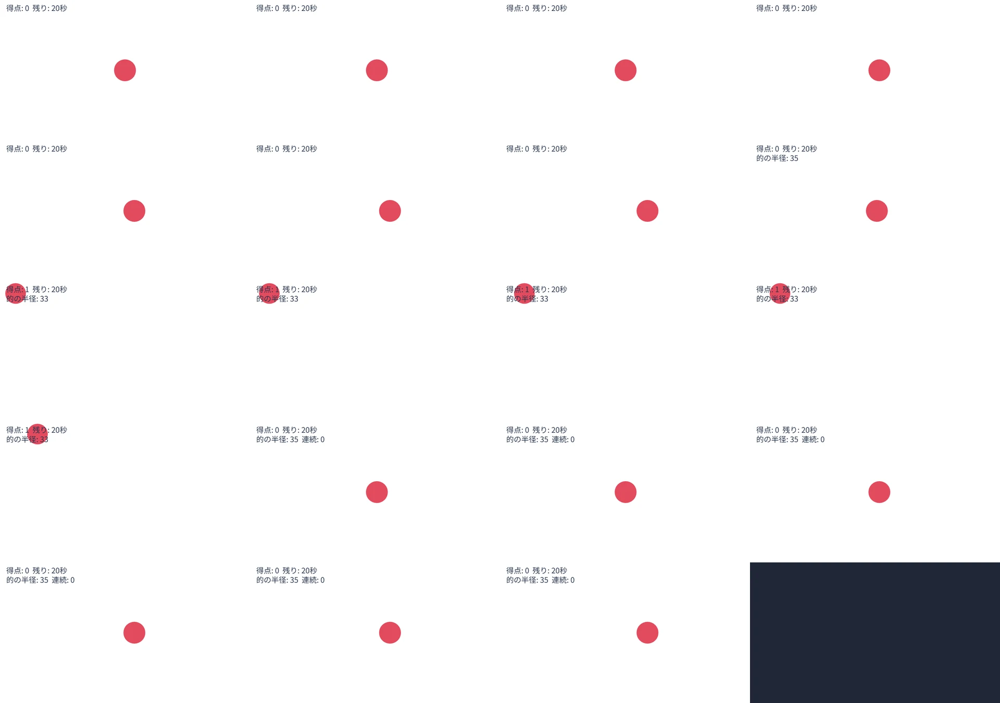
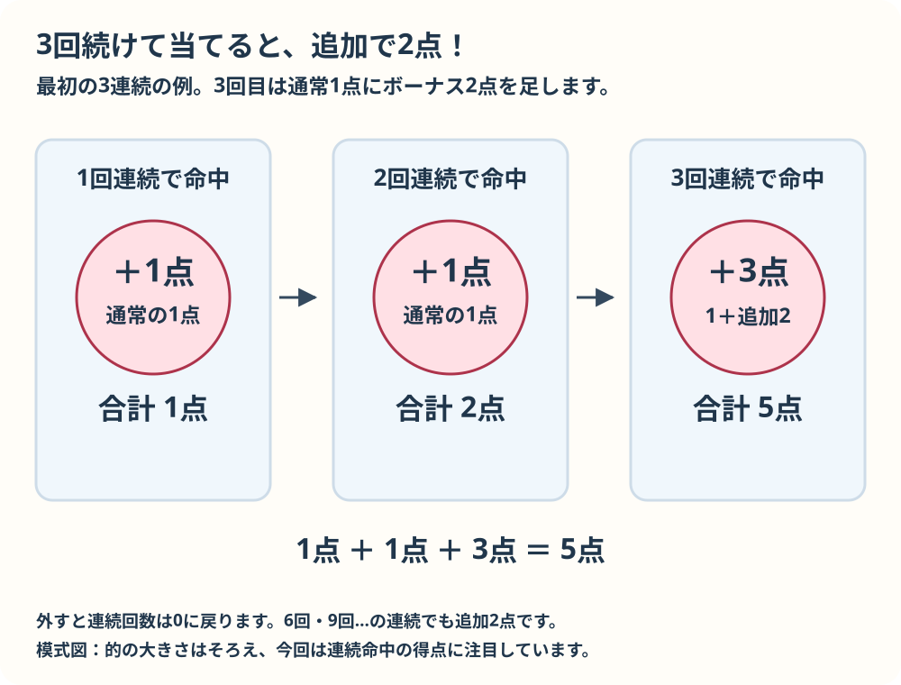

クリックで的あての発展
基本の完成版から3つの機能を順番に追加します。
始める前に
基本編の完成版から始めます。ZIPを展開してできたフォルダーでindex.htmlを開きます。ZIPには基本編の3ファイルが入っています。
WindowsでZIPを展開する（動画）
自分で作った基本版でも同じ内容なら使えます。
各段階の変更を上から順に作業用の script.js に加えます。変更前と同じ範囲を探して、変更後のコードに置き換えてください。保存したら index.html を開くか、再読み込みします。
ステップ 1：動く的
このステップの見本を図で見る

このステップの見本
この行を足す前 変わったコードの一例（script.js）
targetDX = 2;
見本で確かめること
的が動き、端まで来ると向きを変えます。
目標
的が左右に動き、画面の端で折り返します。
確認欄までは準備中です。作業を順に進め、確認欄で保存して動作を確かめます。
書く場所と置き換えるコード
横に動く速さを用意する
作業用フォルダーの script.js で、次の範囲を探して置き換えます。
置き換える範囲
let targetX, targetY, score, endTime;
置き換えるコード
let targetX, targetY, score, endTime, targetDX;
targetDX は横方向に1回の更新で進む量です。正の2なら右へ、負の−2なら左へ進みます。
速さを初期化する
作業用フォルダーの script.js で、次の目印を探し、その直後に書きます。
目印
targetY = 225;
書き足すコード
targetDX = 2;
start() はやり直すときも2に戻します。
時間内に的を動かす
作業用フォルダーの script.js で、次の目印を探し、その直後に書きます。
目印
function update() {
書き足すコード
if (performance.now() >= endTime) return;
targetX += targetDX;
締切以上なら return で更新を終えます。時間内なら中心の横座標に targetDX を足します。
左右の端で向きを変える
作業用フォルダーの script.js で、次の目印を探し、その直後に書きます。
目印
if (performance.now() >= endTime) return;
targetX += targetDX;
書き足すコード
if (targetX <= radius) {
targetX = radius;
targetDX = 2;
} else if (targetX >= canvas.width - radius) {
targetX = canvas.width - radius;
targetDX = -2;
}
左端に届いたら中心を半径の位置に合わせ、右向きの2にします。右端では canvas.width - radius に合わせ、左向きの−2にします。半径を使うので円の端が画面に収まります。
保存後の確かめ方
保存してゲーム画面を更新する（動画）
index.html を再読み込みします。的が動き、端まで来ると向きを変えます。Rで中央から再開します。 この段階の見本を開く
小さな練習
横速度2を3に変えて比べます。 練習後はコードを元に戻してください。
ステップ 2：命中すると小さくなる
このステップの見本を図で見る
このステップの見本
この行を足す前 変わったコードの一例（script.js）
radius = 35;
見本で確かめること
クリックで命中すると半径の表示が35から33に変わります。
目標
命中するたびに的の半径を少し小さくします。
確認欄までは準備中です。作業を順に進め、確認欄で保存して動作を確かめます。
書く場所と置き換えるコード
命中回数と半径を用意する
作業用フォルダーの script.js で、次の範囲を探して置き換えます。
置き換える範囲
let targetX, targetY, score, endTime, targetDX;
const radius = 35;
置き換えるコード
let targetX, targetY, score, endTime, targetDX, radius, hitCount;
radius は的の半径、hitCount は命中した回数です。半径を変えるため、以前の const から let にします。
初めの大きさに戻す
作業用フォルダーの script.js で、次の目印を探し、その直後に書きます。
目印
targetY = 225;
targetDX = 2;
書き足すコード
radius = 35;
hitCount = 0;
半径を35、命中回数を0にします。R キーでやり直すときもこの値に戻ります。
半径を表示する
作業用フォルダーの script.js で、次の目印を探し、その直後に書きます。
目印
ctx.fillText("得点: " + score + " 残り: " + seconds + "秒", 20, 35);
書き足すコード
ctx.fillText("的の半径: " + radius, 20, 65);
+ で文字と現在の radius をつなぎます。
当たるたびに的を小さくする
作業用フォルダーの script.js で、次の目印を探し、その直後に書きます。
目印
score++;
書き足すコード
hitCount++;
radius = Math.max(15, 35 - hitCount * 2);
hitCount++ で命中回数を1増やします。半径は1回目に33、2回目に31となり、Math.max(15, ...) で15より小さくしません。新しい位置は縮んだ後の半径を使います。
保存後の確かめ方
クリックで命中すると半径の表示が35から33に変わります。 この段階の見本を開く
小さな練習
最小の半径15を20にして遊びやすさを比べます。 練習後はコードを元に戻してください。
ステップ 3：連続命中のボーナス
このステップの見本を図で見る
このステップの見本
ctx.fillText("的の半径: " + radius, 20, 65);
変わったコードの一例（script.js）ctx.fillText("的の半径: " + radius + " 連続: " + streak, 20, 65);
見本で確かめること
3回連続で当てると得点は5、半径は29です。
目標
外さずに続けて当てると追加点を得られます。
確認欄までは準備中です。作業を順に進め、確認欄で保存して動作を確かめます。
書く場所と置き換えるコード
連続命中を覚える
作業用フォルダーの script.js で、次の範囲を探して置き換えます。
置き換える範囲
let targetX, targetY, score, endTime, targetDX, radius, hitCount;
置き換えるコード
let targetX, targetY, score, endTime, targetDX, radius, hitCount, streak;
streak は外さずに続けて当てた回数です。hitCount は的の大きさを決める総命中回数で、別の値です。
連続数を初期化する
作業用フォルダーの script.js で、次の目印を探し、その直後に書きます。
目印
hitCount = 0;
書き足すコード
streak = 0;
start() は連続数を0にします。やり直すときも同じです。
連続数を表示する
作業用フォルダーの script.js で、次の範囲を探して置き換えます。
置き換える範囲
ctx.fillText("的の半径: " + radius, 20, 65);
置き換えるコード
ctx.fillText("的の半径: " + radius + " 連続: " + streak, 20, 65);
+ で文字と2つの値をつなぎます。
連続命中で追加点を入れる
作業用フォルダーの script.js で、次の範囲を探して置き換えます。
置き換える範囲
score++;
置き換えるコード
streak++;
score += 1;
if (streak % 3 === 0) score += 2;
streak++ で連続数を1増やし、通常の1点を加えます。% 3 は3で割った余りです。余りが0になる3回目、6回目などにはさらに2点を加えます。最初の3連続なら1＋1＋3で合計5点です。

命中すると通常は1点入ります。3回続けて当てたときは、通常の1点に追加2点が入るので、その回は3点です。最初の3連続なら1＋1＋3で合計5点になります。外すと連続回数は0に戻ります。
的の大きさをそろえ、得点だけに注目しています。的が縮む別の発展内容はこの図では扱いません。
外したら連続数を戻す
作業用フォルダーの script.js で、次の目印を探し、その直後に書きます。
目印
targetY = radius + Math.random() * (canvas.height - radius * 2);
書き足すコード
} else {
streak = 0;
外すと streak は0に戻ります。総命中回数 hitCount は減らないので、的の半径は戻りません。3回目の命中後の半径は29です。
保存後の確かめ方
3回連続で当てると得点は5、半径は29です。外すと連続回数が0になり、Rで全部戻ります。 この段階の見本を開く
小さな練習
追加点2を1に変えて得点を比べます。 練習後はコードを元に戻してください。